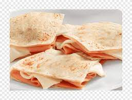

Quesadilla Recipe
Odin Recipes

Description
Ingredients
- 2 large white tortillas
- 50 g of mozzarela cheese
- 1 slice of ham
Steps
- Heat a pan up
- Add the cheese onto the pan so it starts melting
- As the cheese melts, add the ham on top
- When the cheese is fully melted add the tortilla on top
- Flip over and cover with the second tortilla
- Enjoy!